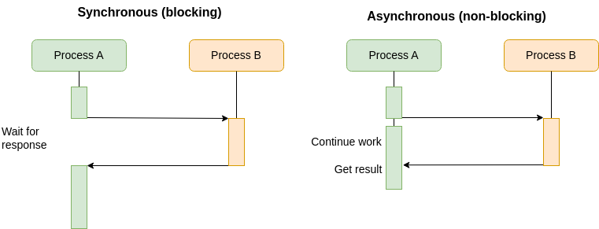

Keyboard shortcuts:
N/СпейсNext Slide
PPrevious Slide
OSlides Overview
ctrl+left clickZoom Element
If you want print version => add '
?print-pdf' at the end of slides URL (remove '#' fragment) and then print.
Like: https://wwwcourses.github.io/...CourseIntro.html?print-pdf
Promises. Async/Await
Created for
Created by
Asynchronous JavaScript
Synchronous vs. Asynchronous Execution
- Synchronous Execution: Tasks are performed one after another. Each task must finish before the next one begins, causing potential delays if one task takes time.
- Synchronous execution is like waiting in line at a coffee shop - you can't do anything else until you get your coffee.
- Asynchronous Execution: Tasks can run independently of each other. One task doesn't need to wait for another to finish. This improves efficiency, especially for I/O-bound operations like making network request for data, read/write from files or interacting with databases.
- Asynchronous execution is like ordering coffee and then doing other tasks while it's being made 
{kind=link}
Synchronous vs. Asynchronous Demo
function calcSum_Sync(arr){
console.log(arr.reduce((ac, el)=>ac+el));
}
function calcSum_Async(arr){
//setTimeout is executed asynchronous and is not blocking the rest of the code!
setTimeout(()=>{console.log( arr.reduce((ac, el)=>ac+el) )}, 0)
}
// generate array of integers (1..1_000_000)
const numbers = Array.from({length:1_000_000},(_,i)=>i+1);
console.log(`~~~~~ Sync execution ~~~~~`);
calcSum_Sync(numbers);
console.log(`Do other task`);
console.log(`\n~~~~~ Async execution ~~~~~`);
calcSum_Async(numbers);
console.log(`Do other task`);
// OUTPUT
// ~~~~~ Sync execution ~~~~~
// 500000500000
// Do other task
// ~~~~~ Async execution ~~~~~
// Do other task
// 50000050000
Why Using Promises or Async/Await?
Why Using Promises or Async/Await?
The problem ()
- We have to write a program, that will execute a sequence of asynchronous tasks: first, prepare a dinner (prepareDinner), then eat the dinner (eatDinner), and finally go to bed (goToBed). Each step depends on the successful completion of the previous one. Also we must handle possible errors properly.
- Examine the next code. It works as we want, but calling a function into another function is a bad practice
- no separation of concerns
- spaghetti code
const handleError = err=>{
console.error(`Error: ${err}`)
}
const prepareDinner = ()=>{
console.log(`prepareDinner will take 2000ms`);
setTimeout(() => {
// do work on prepare dinner
const dinner = 'pizza'
const success = true;
if(success){
console.log(`${dinner} is prepared!`);
eatDinner(dinner);
}else{
handleError(`Can not buy dinner!`);
}
}, 2000);
};
const eatDinner = (dinner)=>{
console.log(`eatDinner will take 500ms`);
setTimeout(() => {
// do work on eat dinner
const success = true;
if(success){
console.log(`${dinner} is eaten!`);
goToBed(`Sweet Dreams after ${dinner} `)
}else{
handleError(`Can not eat dinner!`);
}
}, 500);
}
const goToBed = (msg)=>{
console.log(`${msg}`);
}
prepareDinner();
console.log(`Do something else while prepare=>eat=>gotToBed...`);
Solution with callbacks
- Next code do the task, but results in nested callbacks, which can become harder to read and manage as the sequence grows, illustrating the concept of "callback hell".
const handleError = err=>{
console.error(`Error: ${err}`)
}
const prepareDinner = (successCallback, errorCallback)=>{
console.log(`prepareDinner will take 2000ms`);
setTimeout(() => {
// do work on prepare dinner
const dinner = 'pizza'
const success = true;
if(success){
console.log(`prepareDinner finished successfully (${dinner})!`);
successCallback(dinner);
}else{
errorCallback(`Can not buy dinner!`);
}
}, 2000);
};
const eatDinner = (dinner, successCallback, errorCallback)=>{
console.log(`eatDinner will take 500ms`);
setTimeout(() => {
// do work on eat dinner
const success = true;
if(success){
console.log(`eatDinner finished successfully!`);
successCallback(`Go to bed after ${dinner}`)
}else{
errorCallback(`Can not eat dinner!`);
}
}, 500);
}
const goToBed = function(msg){
console.log(`${msg}`);
}
// Callback hell
prepareDinner((prepareRes)=>{
eatDinner(prepareRes, (eatRes)=>{
goToBed(eatRes)
},handleError)
},handleError)
console.log(`Do something else while prepare=>eat=>gotToBed...`);
Solution with Promises
- Next code is definitely cleaner. Notice that we do not need to use nested callbacks, but instead, we chain asynchronous operations using then
- We can clearly define the flow of asynchronous tasks in a linear fashion, keeping the logic flat. Each promise resolves or rejects, and we handle the result or error in separate .then() or .catch() blocks. This not only improves code readability but also makes error handling more centralized and easier to manage compared to multiple nested error-handling mechanisms in callbacks.
const handleError = err=>{
console.error(`Error: ${err}`)
}
const prepareDinner = function() {
console.log(`prepareDinner will take 2000ms`);
return new Promise((resolve,reject)=>{
setTimeout(() => {
// do work on prepare dinner
const dinner = 'pizza'
const success = true;
if(success){
console.log(`${dinner} is prepared!`);
resolve(dinner);
}else{
reject(`Error: Can not buy dinner!`);
}
}, 2000);
})
};
const eatDinner = function(dinner){
console.log(`eatDinner will take 500ms`);
return new Promise((resolve,reject)=>{
setTimeout(() => {
// do work on eat dinner
const success = true;
if(success){
console.log(`${dinner} is eaten!`);
resolve(`Sweet Dreams after ${dinner}`)
}else{
reject(`Error: Can not eat dinner!`);
}
}, 500);
})
}
const goToBed = function(msg){
console.log(`${msg}`);
}
prepareDinner()
.then(prepareRes=>eatDinner(prepareRes))
.then(eatRes=>goToBed(eatRes))
.catch(handleError)
console.log(`Do something else while prepare=>eat=>gotToBed...`);
Solution with async/await
- Unlike promises with .then(), async/await syntax allows asynchronous code to be written in a way that closely resembles synchronous flow, making it easier to understand.
- The
awaitkeyword waits for each promise to resolve before moving to the next one, ensuring that each task (preparing dinner, eating dinner, and going to bed) is executed in sequence without deep nesting - Error handling is also simpler: the try/catch block ensures that any error encountered during the asynchronous operations is caught in a centralized location, avoiding the need to attach .catch() handlers to individual promises.
const handleError = (err) => {
console.error(`Error: ${err}`);
}
const prepareDinner = async () => {
console.log(`prepareDinner will take 2000ms`);
return new Promise((resolve, reject) => {
setTimeout(() => {
const dinner = 'pizza';
const success = true;
if (success) {
console.log(`${dinner} is prepared!`);
resolve(dinner);
} else {
reject(`Error: Can not buy dinner!`);
}
}, 2000);
});
};
const eatDinner = async (dinner) => {
console.log(`eatDinner will take 500ms`);
return new Promise((resolve, reject) => {
setTimeout(() => {
const success = true;
if (success) {
console.log(`${dinner} is eaten!`);
resolve(`Sweet Dreams after ${dinner}`);
} else {
reject(`Error: Can not eat dinner!`);
}
}, 500);
});
};
const goToBed = (msg) => {
console.log(`${msg}`);
};
const executeTasks = async () => {
try {
const prepareRes = await prepareDinner();
const eatRes = await eatDinner(prepareRes);
goToBed(eatRes);
} catch (err) {
handleError(err);
}
};
executeTasks();
console.log(`Do something else while prepare=>eat=>gotToBed...`);
Promises
Promises
Overview
- A Promise is an object representing the eventual completion or failure of an asynchronous operation
- Essentially, a promise is an object to which you attach callbacks, instead of passing callbacks into a function.
- A Promise has three possible states:
- Pending: The initial state, before the promise has been fulfilled or rejected.
- Fulfilled: The operation completed successfully, and the promise has a resulting value.
- Rejected: The operation failed, and the promise has a reason for the failure.
- A promise object has method then() which accepts two callback functions and returns a promise object (which means that we can chain multiple
then()calls) - Once a Promise is fulfilled or rejected, the respective handler function (onFulfilled or onRejected) will be called asynchronously
Promise Object - Basic Structure
- A promise is created using the
new Promiseconstructor, which takes a function with two arguments: resolve (for success) and reject (for failure).
let myPromise = new Promise((resolve, reject) => {
let success = true; // Or some condition to determine success/failure
if (success) {
resolve("Operation successful!"); // Resolving the promise
} else {
reject("Operation failed!"); // Rejecting the promise
}
});
Consuming a Promise
- Once a promise is created, you can consume it using .then(), .catch(), or .finally() methods.
- .then(): Used to handle fulfillment of the promise (when the promise is resolved).
- .catch(): Used to handle rejection (when the promise is rejected).
- .finally(): Used to perform an action regardless of whether the promise was fulfilled or rejected (like cleanup).
myPromise
.then(result => {
console.log(result); // "Operation successful!" if resolved
})
.catch(error => {
console.error(error); // "Operation failed!" if rejected
})
.finally(() => {
console.log("Promise completed, success or failure."); // Always runs
});
Example of Using a Promise with an Async Operation
// create Promise object:
const p = new Promise((resolve, reject)=>{
// do promised work asynchronously, like getting data
setTimeout(() => {
const data = 'Data fetched...';
if(data){
resolve(data)
}else{
reject('Error')
}
}, 1000);
});
// use promise:
p.then(value => {
console.log(value);
}, reason => {
console.error(reason);
});
Example: Promise for even number
let promiseForEven = new Promise( (resolve, reject)=>{
setTimeout(function(){
let num = Math.round(Math.random()*100);
if(num%2 === 0){
console.log(`Promise for even number is fulfilled!`);
resolve(num)
}else{
console.log(`Promise for even number is rejected!`);
reject(num)
}
},2000)
})
function promiseFulfilled(num){
console.log('Let do something with '+num);
}
function promiseRejected(num){
console.log('Error: '+num);
}
promiseForEven
.then( promiseFulfilled )
.catch( promiseRejected )
console.log(`I'm doing something important and I don't want to wait`);
Async/Await
Async/Await
Overview
- Async/await is a syntactic feature that allows writing asynchronous code in a more synchronous manner. It's built on top of Promises.
- An async function always returns a Promise, regardless of whether you explicitly return a value or not. If you return a value, the Promise will resolve with that value; if an error is thrown, the Promise will reject with that error.
- The await keyword can be used inside async functions to pause the execution until the Promise is resolved.
let getDataPromise = new Promise((resolve, reject) => {
setTimeout(() => {
resolve('Some data');
// reject('Error message');
}, 1000);
});
async function renderData() {
try {
const data = await getDataPromise
console.log(data);
} catch (error) {
console.error(error);
}
}
renderData();
Async/Await API vs Promise API
let getDataPromise = new Promise((resolve, reject) => {
setTimeout(() => {
// resolve('Some data');
reject('Can not get data!');
}, 1000);
});
// using getDataPromise with Async/Await API:
async function renderData() {
try {
const data = await getDataPromise
console.log(data);
} catch (error) {
console.error(error);
}
}
// using getDataPromise with Promise API:
function renderData() {
getDataPromise
.then(data=>console.log(data))
.catch(err=>console.log(err))
}
renderData();
References
References
Docs
These slides are based on
customized version of
framework